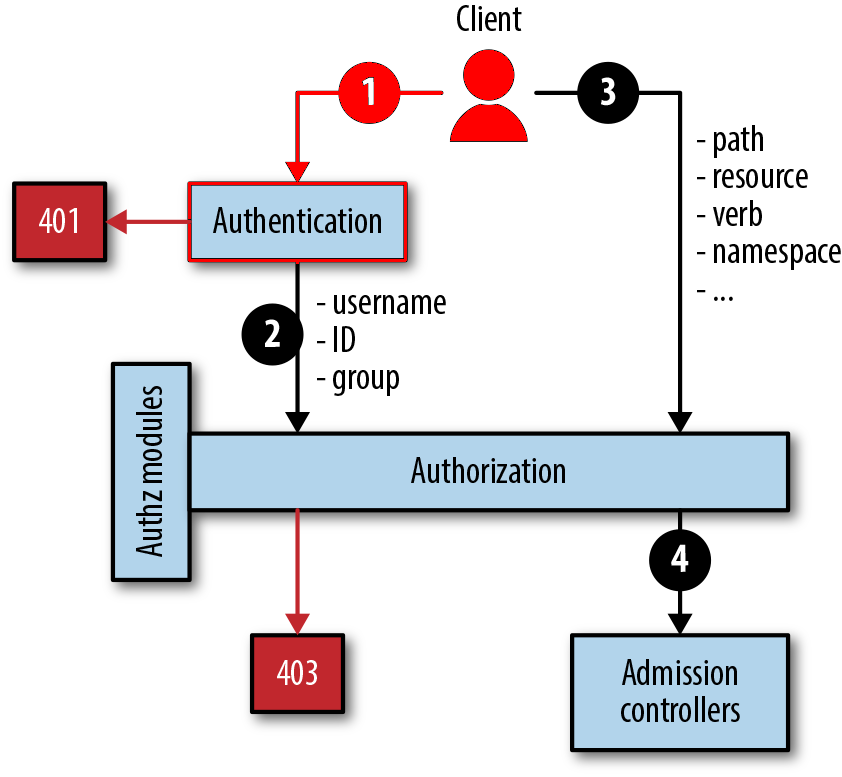

DevSecOps in Kubernetes
Emelie Tham
Philip Wester
Agenda
The What and Why of DevSecOps
Before DevOps...

DevOps bridges the gap between development and operations
Next step...?

...DevSecOps!
Incorporating security to DevOps

DevSecOps is the application of DevOps practices through the lens of security by shifting security left, automating security tests and monitoring with the aim of making communication between developers and security engineers more effective.
Let's not leave security engineers out of the DevOps circle...

... when there are immense benefits of including them! 😃
Kubernetes
An open-source system that automates the deployment, scaling and mangement of containerized applications.
Kubernetes Security
Assumption that Kubernetes is secure by default...
Security cannot be an afterthought
Several security vulnerabilities have been found:
- Billion Laughs vulnerability
- runC vulnerability
Tesla Kubernetes Cryptojacking Exploit
The 4C's of Cloud Native Security

The 4C's of Cloud Native Security
Important Security Principles
Defense in Depth
Least Privilege
Reduce Attack Surface
Warning
Do not do this At home!
For the sake of the presentation we assume either:
- The Kubernetes API is exposed
- One or more services running on Kubernetes is exposed
Don’t expose your API or service if you do not have to!
⚠
Securing Kubernetes Cluster
Kubernetes does NOT protect your cluster from bad practices
Kubernetes CAN limit the damage in case of a breach, if implemented correctly
1. Securing access to Kubernetes API
Use TSL for all API traffic
- API Authentication
- API Authorization
Kubernetes Authentication
Used for both Service and Users accounts
Useless without Authorization
Kubelets allow unauthenticated access to their API by default
Authentication Strategies
- Static password or token files
- X.509 Certificates
- OpenID Connect
- Bootstrap Tokens
- Authenticating proxy
- Webhook token authentication
Good authentication practice to...
... use third-party providers
... not use static files
... enforce life cycle for authentication
Kubernetes Authorization
Kubernetes Authorization
Kubernetes Authorization
Kubernetes Authorization
Kubernetes Authorization Modes:
Role-Based Access Control (RBAC)
Attribute-based Access control (ABAC)
Node Authorization (Kubelets API authorization)
Webhooks
Role-Based Access Control
Namespaces
2. Securing Kubernetes Pods
- Security Context
- Pod Security Policies (Admission Controllers)
- Network Policies
- Resource Allocation Management
Security Context
Controlling what privileges and access containers run with.
It allows pods to...
- run as a specific Linux user (i.e. root),
- run as privileged,
- access the host network, e.t.c.
Pod Security Policies
Implemented as an admission controller.
Restricts which pods can be run on the cluster according to the security context.
Network Policies
Limiting the traffic flow between pods.
Helps add extra layer of security:
- Stop external attacker from sending traffic to applications running inside the pods.
- Restricts network access for compromised container.
- Restricts metadata API in cloud platforms
Resource Allocation Management
Resource Quota
Limit Range
Prevent unathorized resource consumption
3. Securing Kubernetes Components
- Enable Kubelet authentication and authorization
- Restrict access to etcd
- Enable audit logging
- Rotate infrastructure credentials frequently
- Review third party integrations
- Encrypt secrets at rest
To further strengthen Kubernetes security make use of open source tools!
Open source Kubernetes tools:
- https://emetha.github.io/reveal_presentations/kubernetes_and_devsecops_presentation.html#/2/2reos/clair">Clair - for the static analysis of vulnerabilities in containers
- Kube-bench - checks whether a Kubernetes cluster is deployed according to security best practices
- Kubesec - helps quantify risks for Kubernetes resources
- Kubeaudit - audits applications in your K8s cluster
Conclusion
Any Questions?
References
-
Kim Carter, Francois Raynaud on DevSecOps, IEEE Software, (2017)
-
Nipuna Dilhara, CSA Releases “The Six Pillars of DevSecOps” Report. https://medium.com/@nipunadilhara/how-kubernetes-advances-devsecops-117572983b5a Accessed on [2020-04-8] (2020)
-
Technology For You, How Kubernetes Advances DevSecOps. https://www.technologyforyou.org/csa-releases-the-six-pillars-of-devsecops-report/ Accessed on [2020-04-8] (2019)